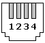

IMPORTANT : This article is based onto this page, so all credits to him http://www.mml.uni-hannover.de/einhorn/headset/index_e.html
Why why why oh why ?
I'm interrested only in the Cisco IP phones 794x series (7942 at my desk), which I have at office, for the which company pays a RIDICULOUSLY HIGH price for a simple headset. It's just a proof of concept by the way, and also a little pied-de-nez to the buyers.Edit: Result is that it's working perfectly fine
 ! Even better than the wireless headset that we bought (Jabra stuff), even though of course this one is wired.
! Even better than the wireless headset that we bought (Jabra stuff), even though of course this one is wired. Pinout
Here is the pinout for the headset jack (RJ10, hard to find, I "borrowed" the cable of the handset of my old phone) at the Cisco phone (the image shows the view upon the jack): 1= SPK %20 2= MIC - 3= MIC %20 4= SPK -
Documentation
- General http://mollien.net/?main=articles&article_id=10
- The Holly Graal http://www.mml.uni-hannover.de/einhorn/headset/index_e.html
Parts
- 1x RJ10 jack already wired (usually a handset wire is RJ10)
- 2x 3.5" jack female so you can plug the 1000JPY headset on (one for microphone, 1 for headphone) : 2x 150 jpy at Tokyu hands
- a little box, a little solder, ...